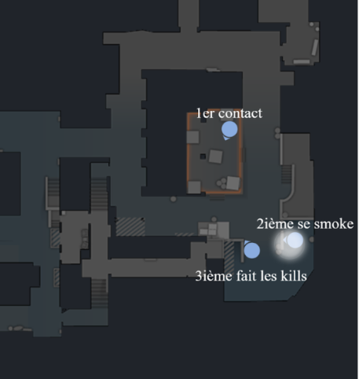

Side CT
Concept 1 : Équilibre sur la carte
Sur la carte en défense on a un côté fort et l’autre faible. Cela offre plusieurs possibilités.
Côté faible :
- Bloquer/sécuriser avec du stuff
- Jouer safe
- Faire croire que le côté est fort
Côté fort :
- Prendre le plus de zones défendables possibles
- Utiliser le nombre (revenge) plutôt que les stuffs
- Faire croire que le côté est faible
Explications : Si on fait un move à 3 et que 2 meurent, le 3ème a un avantage. Il peut soit bloquer avec du stuff, soit faire 2-3 kills de terros naïfs.
CONCLUSION :
On veut faire un move d’un côté ?
- Début de round : start à 3
- Milieu de round : pre-rota pour être le 3ème joueur
Concept 2 : Les zones pop
Les zones neutres pop sont les zones les plus importantes, ce sont les zones où les Terro peuvent prendre le site à tout moment sur une flash.
LA RÈGLE ULTIME : En début et milieu de round on doit TOUJOURS avoir les zones pop d’un des deux sites. (lis une deuxième fois)
Les zones pop pour chaque map :
- Dust 2 : (tunnel B, short)
- Inferno : (car, T)
- Mirage : (palace, ramp A, connector, B apps, short)
- Anubis : (main A, mid, main B, cave)
- Ancient : (main A, donut, cave, ramp B)
Quand prendre ou lacher ces zones ?
- Début de round :
- Prendre le maximum de zones neutres.
- Milieu de round :
- Envoyer du nombre sur le site ou on a le moins de zones neutres.
CONCLUSION :
Si on perd une zone pop sur un site faible :
- Reprendre l’info sur la zone pop du site fort.
Concept 3 : Reprise de zone neutre (ou prise d’info mid round)
Quand on perd toutes les zones neutres, on ne peut plus savoir sur quel site vont finir les T. Il faut donc systématiquement REPRENDRE l’une des zones pop, cela permet d’envoyer plus de joueurs sur le site ou l’on a perdu les zones.
La reprise de zone doit se faire sur un côté fort, elle doit être précise.
Note : C’est ici que les pros font la différence, chacune de leur reprise est spécifique et à une petite (micro) variation imprévisible (exemple: une flash timée un peu plus tard).
Concept 4 : Setups de défense avantage
Lorsque les Terros font leur finnish, un setup de défense du site doit se mettre en place. L’idéal est d’être 3 à 4 sur le site du finnish. Cela offre des possibilités et des avantages considérables.
Si on est à 3 ou 4, une fois que les deux fixes bp sont repérés, les 2 autres sont invisibles, Ils doivent donc faire les premiers kills.
Setup défense avantagé (3 ou 4 sur site)
Note : “Un ou deux mecs bait pour qu’un autre fasse -2 et quand ça se tape, tout le monde se tape.”
Explications en vidéo :
Explications points par points :
- Premier contact coup d’épaules/kill si il a un rifle | ligne fixe si il a une awp
- Un autre se smoke
- Le(s) dernier(s) caché fait des kills
- Les autres swing avec lui
Exemple : G2 vs 9z - IEM Dallas - Inferno - Round 24 | (timecode 54:37)
Positionnement de G2 de l'exemple vidéo précédent
Side Terro
Concept 1 : Équilibre sur la carte
Le but des T est de trouver/deviner quel site est faible et quel site est fort tout au long du round.
Sources d’informations :
La vision, le son, les stuffs, les setups et l'économie peuvent nous aider à deviner le positionnement des CT.
Signes que le site est faible :
- Ils délaissent les zones
- Ils bloquent rapidement avec du stuff
- Setup fort identifié
- L’autre site est fort
Signes que le site est fort :
- Ils prennent les zones
- Ils ne bloquent pas les zones avec du stuff
- Setup faible identifié
- L’autre site est faible
Note : Attention au stack !
Niveau de force sur une zone
On est fort sur une zone lorsque l’on est à 3 ou plus, ce qui veut dire que l’on peut exploser sur le site à tout moment.
On est faible sur une zone lorsque l’on est 2 au plus.
CONCLUSION :
Toujours finnish sur un site faible.
Concept 2 : Les zones pop
Les zones neutres pop sont les zones les plus importantes, ce sont les zones où les Terro peuvent prendre le site à tout moment sur une flash.
N’importe quel stuff lancé depuis une zone pop va créer de la paranoïa chez les CT. Ils auront tendance à renforcer ce côté (et donc affaiblir l’autre).
LA RÈGLE ULTIME : Avant de faire un finnish sur un site, il faut systématiquement avoir le contrôle de la zone pop de l’autre site.
Les zones pop pour chaque map :
- Dust 2 : (tunnel B, short)
- Inferno : (car, T)
- Mirage : (palace, ramp A, connector, B apps, short)
- Anubis : (main A, mid, main B, cave)
- Ancient : (main A, donut, cave, ramp B)
CONCLUSION :
Si on veut faire une exec sur un site, il faut s’assurer d’avoir les bonnes zones.
Concept 3 : Les phases de jeu
Sur la carte en attaque il y a différentes façons de contrôler les zones.
- passif ⟶ zone safe à 1 ou 2 joueurs (faible)
- agressif ⟶ prise de zone neutres à 3 ou 4 joueurs (fort)
- freeze ⟶ défense de zone neutre de 2 à 4 joueurs (punir la prise d’info CT) > setups réfléchis (fort)
- déclic ⟶ 3 à 5 joueurs (fort)
- exec ⟶ (fort)
- fake ⟶ à 1 ou 2 joueurs (faible)
Note : (...) = niveau de force sur la zone - voir concept 1
Exemples des moins évidents
Exemple 1 controle de zone passif : Inferno - Joueur Spinx
Exemple 2 controle de zone passif : Inferno - Joueur Spinx
Exemple Freeze : ...
Maintenant quelles phases utiliser à quel moment ?
Les défenseurs ont un côté fort et l’autre faible donc :
Côté CT faible :
- agressif
- déclic
- exec
- fake
Côté CT fort :
- passif
- freeze
- fake
Concept 4 : Le finnish
Il y en a 2 types :
- le finnish exec
- et le finnish pop/declic.
Le finnish est la phase qui doit être la mieux travaillée en terme de micro gestion.
Les chemins de rush
C’est la mise en place des trajectoires, des stuffs et des timings exacts auxquels les joueurs doivent se déplacer et peek lors de la prise du site. Les chemins de rush doivent être précis et travaillés à l’avance.
Ils se construisent sur :
- la capacité à revenge
- le positionnement des adversaires
- les stuffs disponibles
- les stuffs ennemis
- le nombre de joueurs
(cette construction ne se fait pas pendant la partie)
Note : la aussi des micro variations peuvent être mises en place à très haut niveau.
CONCLUSION :
Il faut toujours avoir au moins finnish travaillé.